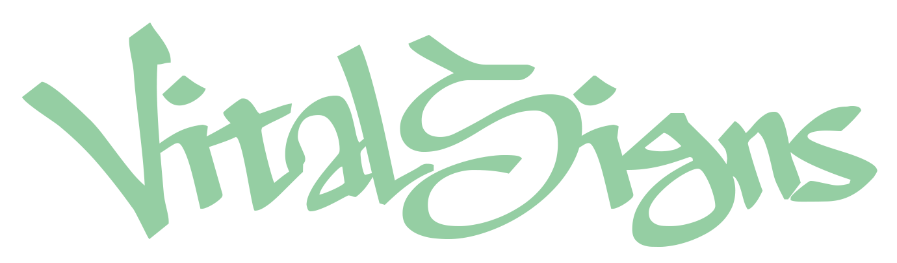

✚
EMERGENCY OBSERVATION PROTOCOL

VITAL
SIGNS
SIGNS
LIFE / DEATH / CHOICE
생존은 언제나 구원일까요?
CLICK TO INITIALIZE SESSION
03 / PATIENT MONITOR
LIVE SIGNAL
HEART RATE
ECG / LEAD II72 BPM
CONDITIONUNSTABLE
PROTOCOLAWAITING INPUT
△ WARNING
SUBJECT DATA INCOMPLETE
MANUAL DECISION REQUIRED
SUBJECT DATA INCOMPLETE
MANUAL DECISION REQUIRED